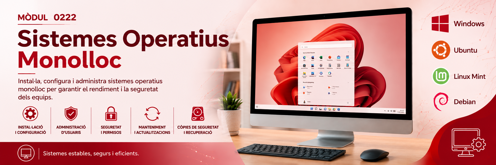

MP0222 · Sistemes Operatius Monolloc
CFGM Sistemes Microinformàtics i Xarxes · Primer curs · Institut Francesc Vidal i Barraquer, Tarragona
Hola! Sóc en Disquet, l'avi retro del mòdul. He vist passar el FAT32, el DOS i fins i tot alguna targeta perforada — aniré apareixent per la web amb algun consell o anècdota quan toqui. Comencem?
RA1. Reconeix les característiques dels sistemes operatius ✓ Complet
1.1 Conceptes bàsics sobre sistemes operatius
Funcions, estructura, classificació, evolució, lliure i propietari 1.2 Sistemes de numeració i codificació de la informació
Conversions, operacions en binari, Ca2, magnituds, ASCII 1.3 Fitxers, memòria i gestió de processos
FAT32/NTFS, journaling, particions, swap, estats d'un procés, FCFS i Round Robin
Funcions, estructura, classificació, evolució, lliure i propietari 1.2 Sistemes de numeració i codificació de la informació
Conversions, operacions en binari, Ca2, magnituds, ASCII 1.3 Fitxers, memòria i gestió de processos
FAT32/NTFS, journaling, particions, swap, estats d'un procés, FCFS i Round Robin
Properament
- Tema 2. Màquines virtuals (RA5)
- Tema 3. SO propietaris (RA2, RA3, RA4)
- Tema 4. SO lliures (RA2, RA3, RA4)